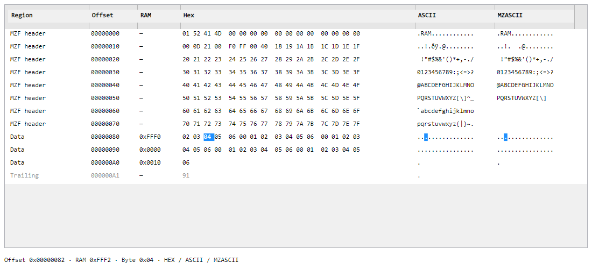
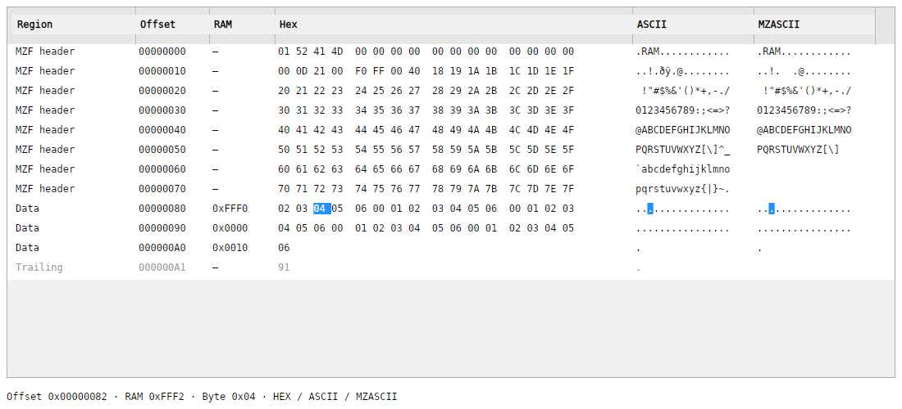

Initial Batch


6. 11. 2026. Original unretouched renders. Open each image for its original resolution. WPF and Windows native use 150% scaling on this machine; exact native dimensions/scales are in native-batch.json. Linux native uses its recorded platform scale. These are application renders, not desktop captures.
Identical MZF fixture SHA-256: 4FA75EB59C34B7961A41DF7305C0635627C07080E87413CE1027A2738D619C7F. RAM / cursor images are labeled headless Skia. WPF has no reference for the newly requested RAM address feature.
Measured state comparison: 3,726 configurations x 7 controls, enabled + visible; zero differences on Windows and Linux. Comparison. Pixel equality is not claimed.

